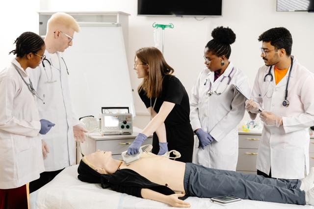
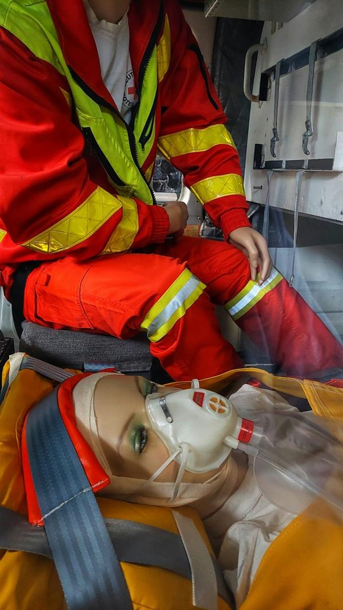
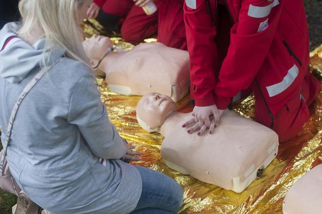

Urgences vitales
10 h 30- Protection, alerte 15 / 112
- Obstruction des voies aériennes
- Hémorragies
- Victime inconsciente qui respire
- Arrêt cardiaque : RCP, DAE
- Matériel d’urgence : chariot, oxygénothérapie
- Chez l’adulte, l’enfant, le nourrisson
Formation nationale · présentiel uniquement
Tarif de référence : 450 €385 € TTCpar participant en session inter · paiement en 4x sans frais
21 h · 3 jours · valable 4 ans
Une même formation, un même niveau d’exigence et une seule ligne pour tout organiser : trois jours de pratique en groupe de 10 à 12, une attestation délivrée par le CESU, et la possibilité de faire venir la session chez vous, quelle que soit votre région.
Les sessions inter programmées se tiennent en Île-de-France : Palaiseau, Choisy-le-Roi, Noisy-le-Sec et Pontault-Combault. Pour toutes les autres villes du réseau, il suffit de nous contacter.
| Dates | Centre | Format | Statut | Action |
|---|---|---|---|---|
| Le planning complet s’affiche avec JavaScript. Sessions à Palaiseau, Choisy-le-Roi, Noisy-le-Sec et Pontault-Combault : 07 80 91 23 35. | ||||
Où se tiennent les sessions : 4 allée des Garays à Palaiseau (91120), 16 avenue Jean Jaurès à Choisy-le-Roi (94600), 9 rue Saint-Just à Noisy-le-Sec (93130) ; à Pontault-Combault, le lieu figure sur la convocation.
Partout dans le réseau, la formation se suit en présentiel uniquement : aucune séquence d’e-learning, car la validation repose sur la pratique et les mises en situation simulées.


Le niveau 2 vise les métiers de santé encadrés par la 4e partie du Code de la santé publique, en exercice ou en formation, ainsi que cinq métiers supplémentaires (en jaune). Prérequis unique : faire partie de ce public, sans qu’il soit nécessaire d’être déjà titulaire de l’AFGSU 1.
Évaluation continue tout au long des trois jours, présence intégrale obligatoire, aucun examen final séparé. Au terme des trois jours, l’attestation porte la signature du CESU : chaque session est organisée sous convention avec le CESU 93, quelle que soit la ville.
Arrêté du 30 décembre 2014 modifié (2019, 2021). Équivalence PSC selon l’arrêté du 23 août 2019. Elle ne remplace pas le SST.
Arrêté du 20 février 2026 : les infirmiers de la promotion entrée en 2026 devront détenir une AFGSU 2 valide pour être diplômés. Recommandations ANCESU / SFMU : nouvelle publication en mars 2026.
| AFGSU 1 | AFGSU 2 | |
|---|---|---|
| Public | Personnels non soignants exerçant dans une structure de santé, médico-sociale ou un cabinet : accueil, secrétariat médical, services administratifs, logistique, fonctions techniques | Professionnels relevant de la 4e partie du CSP, en exercice ou en formation ; AES/AMP, assistants de régulation médicale, assistants médicaux, préleveurs sanguins, auxiliaires ambulanciers |
| Prérequis | Appartenir à ce public | Appartenir à ce public ; l’AFGSU 1 n’est pas requise |
| Durée | 14 h, sur 2 jours | 21 h, sur 3 jours |
| Objectifs | Repérer les signes d’une urgence vitale ou potentielle, savoir quels gestes accomplir, contribuer à la gestion d’une urgence collective | Gestes avancés d’urgence vitale et potentielle avec le matériel (chariot, DAE, oxygène), urgences collectives et situations sanitaires exceptionnelles |
| Format | Présentiel | Présentiel uniquement, groupes de 10 à 12 |
| Validation | Attestation valable 4 ans | Évaluation continue, présence intégrale ; attestation délivrée par le CESU, valable 4 ans |
| Renouvellement | Tous les 4 ans | 7 h de recyclage tant que l’attestation court ; après, retour aux 21 h |
| Tarif inter | 290 € TTC |
Chaque région dispose de son propre site, avec ses centres, ses questions et ses outils.
Chaque fiche a son ancre : vous pouvez partager directement le lien de votre ville.
Au 4 allée des Garays, la station la mieux fournie du planning francilien : de quoi trouver une date entre l’automne 2026 et le printemps 2027, pour les soignants du plateau de Saclay et du sud francilien.
Rue Saint-Just, à l’est de Paris, Noisy-le-Sec reçoit les professionnels de Seine-Saint-Denis lors de sessions programmées de janvier à mars 2027.
Au 16 avenue Jean Jaurès, en bord de Seine, Choisy-le-Roi propose des sessions au premier trimestre 2027 aux soignants du sud-est francilien, sans traverser la capitale.
Côté Yvelines, Houilles accueille les soignants de l’ouest parisien, des boucles de la Seine jusqu’aux abords du Val-d’Oise.
Côté Seine-et-Marne, Pontault-Combault rapproche la formation des équipes de l’est francilien, avec des sessions en janvier, février et mars 2027. Le lieu exact figure sur la convocation.
La plus centrale des trois adresses de la métropole lilloise, pour les soignants du Nord comme pour les étudiants de la région.
Entre Lille et Roubaix, Croix complète l’offre métropolitaine pour le nord-est de l’agglomération. Même programme, même attestation.
À l’est de Lille, Villeneuve-d’Ascq offre une troisième option dans la métropole, utile pour répartir plusieurs collègues sur des dates différentes.
Amiens rassemble les professionnels de la Somme et du sud de la région. Les sessions s’y montent à la demande, en groupe de 10 à 12.
Porte sud des Hauts-de-France, Beauvais se trouve à la lisière de l’Île-de-France, pratique pour les soignants de l’Oise.
Rouen est le point de rendez-vous de la vallée de la Seine normande, pour l’hôpital comme pour le libéral.
À l’embouchure de la Seine, Le Havre donne aux soignants de la pointe de Caux leur propre lieu de formation.
Évreux dessert l’Eure, aux confins de l’Île-de-France ; une option pour les professionnels qui exercent entre les deux régions.
Caen-Mondeville réunit les participants du Calvados et de l’ouest normand, Manche et Orne comprises.
Rennes accueille les sessions bretonnes d’Ille-et-Vilaine et reste facile d’accès depuis l’est de la région.
Voisine immédiate de Rennes, Cesson-Sévigné fournit une seconde adresse dans l’agglomération, avec un contenu strictement identique.
Dans les Côtes-d’Armor, Saint-Brieuc est notre centre breton le plus proche du nord et de l’ouest de la péninsule.
À Nantes, étudiants et professionnels de Loire-Atlantique peuvent se retrouver sur une même session inter.
Angers réunit les soignants de Maine-et-Loire dans le même format que partout ailleurs : trois jours, dix à douze participants.
Le Mans dessert la Sarthe et une partie des départements voisins, de la Mayenne à l’Orne.
Sur la côte vendéenne, Saint-Gilles-Croix-de-Vie rapproche la formation des cabinets, officines et services du littoral.
Orléans accueille les sessions du nord de la région, à distance raisonnable du sud de l’Île-de-France.
Tours réunit les soignants d’Indre-et-Loire et de la vallée tourangelle autour des trois modules.
Bourges, dans le Cher, rapproche la formation des professionnels du Berry et du sud de la région.
Pour l’Alsace, le centre Strasbourg-Schiltigheim accueille libéraux et équipes hospitalières du Bas-Rhin et au-delà.
Reims couvre la Marne et l’ouest de la région, de la Champagne aux Ardennes.
En Moselle, Metz rassemble les soignants lorrains, du sillon mosellan aux Vosges.
Le centre du Sud de Lyon sert la métropole lyonnaise et le Rhône ; ailleurs dans la région, l’intra prend le relais.
En Haute-Savoie, Annecy accueille les soignants des Alpes du Nord, de la Savoie au Genevois français.
Toulouse est l’adresse occitane de référence pour les sessions inter, à l’ouest d’une région où l’intra couvre le reste.
Aux portes nord-est de Toulouse, L’Union apporte une seconde adresse dans l’agglomération.
Unique centre de la région, Aix-en-Provence accueille les sessions inter ; de Marseille à Nice, la formation se déplace sinon en intra.
Hôpital, clinique, EHPAD, cabinet, officine ou centre de santé : nous organisons la session dans vos murs, pour un groupe de 10 à 12, sur un calendrier construit avec vous — dans les 10 régions du réseau comme en Nouvelle-Aquitaine, en Bourgogne-Franche-Comté ou en Corse. Tarif sur devis.

Prise en charge dans le cadre de son plan de développement des compétences.
Pour les employeurs privés, selon leur branche professionnelle.
Pour la fonction publique hospitalière.
Pour les professionnels libéraux, sous conditions.
Paiement échelonné en 4x sans frais.
CPF : en principe, il ne peut pas servir à financer l’AFGSU. Mieux vaut le dire d’emblée, pour éviter tout malentendu.
Pour prolonger l’attestation, sept heures de recyclage suffisent, pourvu qu’elles aient lieu avant la date limite ; une fois celle-ci dépassée, seule la formation complète de 21 heures permet de la retrouver.
Le bon tempo : s’y prendre trois à six mois à l’avance, en joignant l’attestation qui court encore. Le tarif du recyclage est précisé sur demande, dans chacune des 32 villes comme en intra.
Programmer un recyclage
[Avis stagiaire à insérer]
[Avis stagiaire à insérer]
[Avis stagiaire à insérer]
Tapez votre ville ou votre code postal dans la recherche en haut de page : elle indique votre région, le centre du réseau le plus proche à vol d’oiseau, ses sessions et la marche à suivre. Le réseau compte 32 villes réparties dans 10 régions.
La Nouvelle-Aquitaine, la Bourgogne-Franche-Comté et la Corse ne comptent pas de centre. Deux possibilités : rejoindre la ville du réseau la plus proche, ou organiser une session intra dans votre établissement, possible partout en France.
Non. Les trois modules, les 21 heures, les groupes de 10 à 12 et l’attestation délivrée par le CESU sont les mêmes dans les 32 villes.
Bien sûr. Les sessions inter sont ouvertes à tout le public de l’AFGSU 2, quelle que soit la région où vous exercez. Les dates programmées se trouvent aujourd’hui à Palaiseau, Choisy-le-Roi, Noisy-le-Sec et Pontault-Combault.
Oui. La ligne AFGSU centralise les demandes intra, quel que soit le nombre d’établissements ; chaque site fait ensuite l’objet de son propre devis.
Parce que toutes nos sessions sont organisées sous convention avec le CESU 93, qui encadre ainsi la délivrance de l’attestation par le CESU, où que se tienne la formation.
Le tarif inter est de 385 € TTC par participant, au lieu de 450 €, quel que soit le centre. L’intra, lui, se chiffre au cas par cas.
Oui. Elle est valable quatre ans et n’est pas attachée à un territoire : un déménagement ne change rien à sa date d’échéance.
Non. L’AFGSU 1 s’adresse aux non-soignants ; les professions de santé et les métiers associés entrent directement en AFGSU 2.
Tout se joue sur la date d’échéance. Avant elle, un recyclage de 7 heures suffit ; après elle, ce sont les 21 heures qui s’imposent.
Entre 10 et 12, en inter comme en intra. Ce format laisse à chacun le temps de pratiquer chaque geste plusieurs fois.
Non, il s’agit d’une distance à vol d’oiseau, donnée à titre indicatif. Le temps de trajet réel dépend de vos moyens de transport.
Oui, à condition d’exercer l’une des professions du public visé. Le financement dépend alors de votre situation ; le paiement personnel en 4x sans frais reste possible.
Aucun centre n’est implanté sur l’île. L’intra dans votre établissement est la solution la plus directe ; sinon, Aix-en-Provence est la ville du réseau la plus proche.
La Nouvelle-Aquitaine n’a pas de centre : depuis Bordeaux, Toulouse et L’Union sont les villes du réseau les plus proches à vol d’oiseau. L’intra reste possible si votre établissement réunit un groupe.
Selon votre ville, Bourges, le Sud de Lyon ou Annecy seront les plus proches — la recherche vous le dira précisément. Une session intra peut aussi se tenir chez vous.
Oui : chacune occupe trois jours consécutifs de semaine, du lundi au mercredi ou du mercredi au vendredi selon les dates.
450 € est le tarif inter de référence ; il est ramené à 385 € TTC par participant, avec la possibilité de régler en quatre fois sans frais.
Les dates programmées s’affichent sur cette page dans le tableau des sessions et sur la fiche de chaque ville. Le plus sûr reste de laisser vos coordonnées : on vous rappelle sous 48 h.
C’est la partie du code consacrée aux professions de santé : professions médicales, pharmacie et auxiliaires médicaux notamment. Y appartenir, ou en être étudiant, ouvre l’accès à l’AFGSU 2.
Au 07 80 91 23 35, Wafa répond aux questions sur les dates, les villes, l’intra, les pièces à fournir et le financement, pour toute la France.
En inter, les sessions se tiennent dans les 32 villes du réseau. Pour une autre ville, la voie à privilégier est l’intra, dans les locaux de votre établissement.
Choisissez votre ville parmi les 32 du réseau, ou l’intra. Wafa vous rappelle pour confirmer la session, les pièces et le financement.
Wafa vous rappelle pour confirmer la ville, la date et les pièces. Pour toute urgence d’organisation : 07 80 91 23 35.
385 € TTC au lieu de 450 € · 07 80 91 23 35